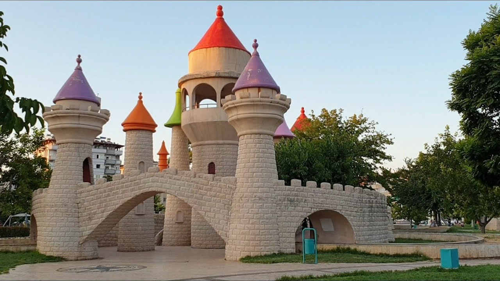
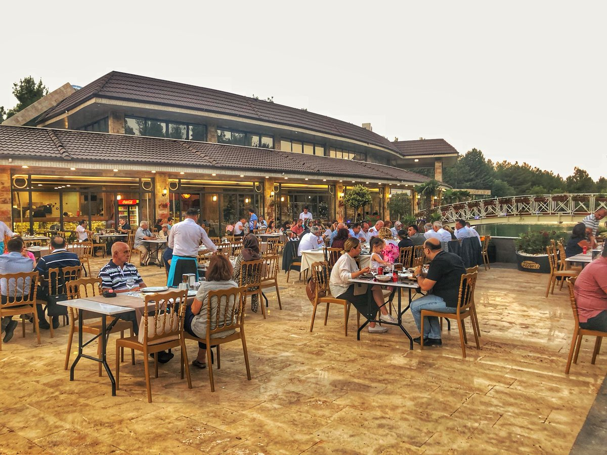
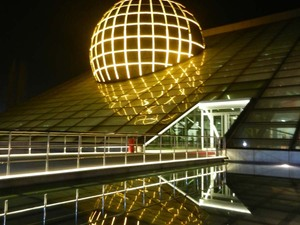

Gaziantep’te Eğlence ve Aile Aktiviteleri

Gaziantep Hayvanat Bahçesi
Türkiye’nin en büyük, Avrupa’nın 4. büyük hayvanat bahçesidir. Çocuklar için eğitici ve eğlenceli bir dünyadır.
Adres: Yamaçtepe, Şahinbey/Gaziantep
Ziyaret: Her gün 09:00 – 18:00
Giriş: Ücretli (Tam: 30 TL)

Masal Parkı
Çocuklara masal kahramanlarını canlı görme fırsatı sunan tematik eğlence alanı. Fotoğraf ve oyun için harika bir atmosfer.
Adres: Karataş Mah., Şehitkamil/Gaziantep
Giriş: Ücretsiz

Mutfak Sanatları Merkezi (MSM)
Gaziantep yemek kültürünü deneyimlemek isteyenler için atölyeler, sunumlar ve tadım etkinlikleriyle dolu bir merkez.
Adres: Bey Mah., Şahinbey/Gaziantep
Ziyaret: Rezervasyonla giriş
Etkinlik: Ücretli

Gaziantep Planetaryum
Gökyüzü gözlemleri, uzay temalı sunumlar ve eğitici etkinliklerle dolu bu alan, özellikle çocuklar için ilgi çekici bir duraktır.
Adres: Şahinbey Bilim Merkezi Yanı, Gaziantep
Ziyaret: Grup saatleriyle belirleniyor
Giriş: Ücretli (Öğrenci: 10 TL)